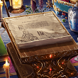
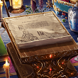

- 5/17
- 定期維修的告知（5/18 13:00實施）
非常感謝您的使用。
這裡是「Fate/Grand Order」營運團隊。
將於下記的期間實施「Fate/Grand Order」的定期維修。
維修中無法遊玩「Fate/Grand Order」。
在維修開始前，請結束關卡及戰鬥。
※若任務及戰鬥進行中開始維修，或不正常結束的話，會有無法領取報酬的情況。
維修後由於更新檔案的下載等通信量增加，會有短時間覺得遊戲動作變慢的情況。
在維修結束後，請試著檔案的全部下載(一括ダウンロード)。
另外推薦在可連接Wi-Fi的環境中下載。
■時間
2016年5月18日(三) 13:00～16:00（預定）
※維修結束的預定時間可能會有前後差異。
▼應用程式的更新
・維修結束後，請進行應用程式的更新。（Android、iOS）
最新的版本如下。
Android：【Ver.1.9.1】
iOS：【Ver.1.9.1】
※請務必在GooglePlay、AppStore更新。
請注意不要解除安裝。
※在GooglePlay沒顯示更新鍵的話，請執行清除GooglePlay的快取。
1.從主畫面點選單鍵，選擇「設定」
2.「應用程式」→選擇「Google Play商店」
3.選擇「清除快取」
注意）請勿點選「解除安裝更新」。
※選單的顯現可能因客戶端而讓操作上有些微差異。
▼【重要】更新之際的注意事項
有著更新程式會讓Servant及概念禮裝的鎖定被解除情況的問題發生。
如果問題發生，麻煩您在程式更新後，重新執行鎖定的設定。
▼遊戲的更新
1.「主線關卡AP消費1/2宣傳活動」開始(5/18追記)
2.聖晶石召喚（期間限定）開始合眾為一3召喚(5/18追記)
3.聖晶石召喚(故事)更新
4.在一部份關卡的冒險部份的文字及演出更新
※對象關卡如下。
･ 幕間物語 第1節
幕間物語 第1節
※已通過關卡的冒險部份，能從MyRoom的マテリアル確認。
5.一部份Servant的語音列表更新
※對象Servant如下。
･
6.一部份幫助文字的更新
7.期間限定活動「Fate/Accel Zero Order」結束
8.一部份Servant及概念禮裝的職階技能及保有技能，刪除有關結束活動的文字
※對象Servant如下。
･


･


※對象概念禮裝如下。
･
 

▼問題的修正
1.一部份Servant的技能說明文字誤記的問題修正
※僅有文字的變更，效果本身並無變更。
※對象Servant及技能如下。
･ 献身の覚悟 A
献身の覚悟 A
(修正前)自身的給予回復力提升(1回合)
(修正後)自身的給予回復量提升(1回合)
2.一部份Servant的戰鬥角色圖像的問題修正
※對象Servant如下。
･
3.一部分文字的錯字漏字修正
對上述的問題修正感到抱歉，會向對象的玩家做出以下對應。
【對象】
於5/18(三) 12:59前有遊玩過「Fate/Grand Order」的所有玩家
【對應內容】
・聖晶石3個
【配布方法】
在禮物箱配布
【配布期間】
2016年5月19日(四)AM3:00～2016年10月31日(一)22:59
非常抱歉麻煩到正在使用的玩家。